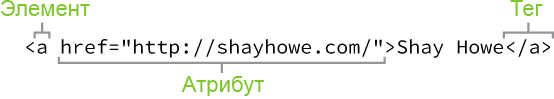
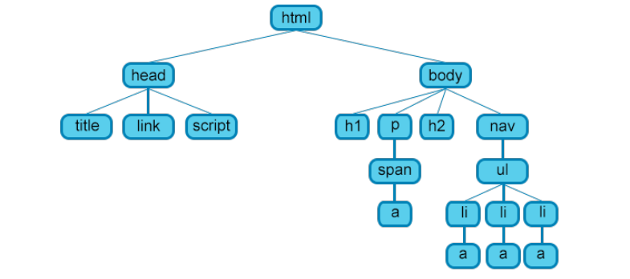

План лекции. HTML
- Введение в язык разметки гипертекста HTML
- HTML теги и атрибуты
- Структура HTML страницы
- HTML текст
- HTML ссылки
- HTML изображения
- HTML списки
- Спецсимволы HTML
- Комментарии HTML
- HTML таблицы
- Создание структуры веб-страницы
План лекции. CSS
- Основы каскадных таблиц стилей CSS
- Способы добавления стилей на страницу
- Базовый синтаксис CSS
- Виды селекторов
- Группировка селекторов
- Наследование
- Как задаются и работают CSS-стили
- Фреймворк Bootstrap
Введение в язык разметки гипертекста HTML
Зачастую в основе сайтов лежат три технологии, которые позволяют обеспечить представление информации в различных ее видах:
- технология HTML — отвечает за структурирование информации и выделение логических блоков на странице сайта
- технология CSS — используется для оформления и позиционирования, представления информации на странице
- технология JavaScript — используется для реализации динамики и интерактивного взаимодействия с пользователем.
HTML (HyperText Markup Language, язык разметки гипертекста) задаёт структуру содержимого и его смысл, определяя такой контент как, к примеру, заголовки, абзацы или изображения. CSS (Cascading Style Sheets) или каскадные таблицы стилей — это язык презентаций созданный для оформления внешнего вида контента, использующий, например, шрифты или цвета.
Эти два языка — HTML и CSS независимы друг от друга и должны таковыми и оставаться. CSS не должен быть написан внутри HTML-документа и наоборот. Как правило, HTML всегда будет представлять содержимое, а CSS всегда будет определять его оформление.
HTML теги и атрибуты
Для управления отображением документа, язык HTML использует управляющие структуры (иногда встречается название дескрипторы) — теги.
Парные теги
<тег атрибут1="значение" атрибут2="значение">...</тег>Могут включать внутри себя другие теги или текст.
Непарные теги
<тег атрибут1="значение" атрибут2="значение">Используются самостоятельно. Создают один элемент на странице, либо служат для изменения свойств документа, подключения файлов и т.д. Одиночные теги не могут хранить в себе содержимого напрямую, оно прописывается как значение атрибута.
Атрибуты можно подразделить на обязательные, они непременно должны присутствовать, и необязательные, их добавление зависит от цели применения тега.
Атрибуты являются свойствами, применяемыми для предоставления дополнительной информации об элементе. Наиболее
распространённые атрибуты включают в себя атрибут id, который идентифицирует элемент; атрибут class,
который классифицирует элемент; атрибут src, который определяет источник встраиваемого содержимого; и
атрибут href, который указывает ссылку на связанный ресурс.
Атрибуты определяются в открывающем теге после имени элемента. В общем, атрибуты включают в себя имя и значение.
Формат для этих атрибутов состоит из имени атрибута со знаком равенства за ним, а затем в кавычках идёт
значение атрибута. Например, элемент <a> с атрибутом href будет выглядеть следующим образом:
<a href="http://shayhowe.com">Shay Howe</a>Данный код будет отображать текст «Shay Howe» на веб-странице и при щелчке на этот текст ведёт пользователя на http://shayhowe.com.
Рис. 7.1 Синтаксис HTML в виде схемы включает элемент, атрибут и тег
Структура HTML страницы
Страница сайта - это обычный текстовый файл с расширением .html. Внутри этого файла хранится текст HTML страницы вместе с тегами.
Рис. 7.2 Простейшая структура веб-страницы
Предок — элемент, который заключает в себе другие элементы. На рис. 7.2 предком для всех элементов является <html>. В то же время элемент <body> является предком для всех содержащихся в нем тегов: <h1>, <p>, <span>, <nav> и т.д.
Потомок — элемент, расположенный внутри одного или более типов элементов. Например, <body> является потомком <html>, а элемент <p> является потомком одновременно для <body> и <html>.
Родительский элемент — элемент, связанный с другими элементами более низкого уровня, и находящийся на дереве выше их. На рис. 7.2 <html> является родительским только для <head> и <body>. Тег <p> является родительским только для <span>.
Дочерний элемент — элемент, непосредственно подчиненный другому элементу более высокого уровня. На рис. 7.2 только элементы <h1>, <h2>, <p> и <nav> являются дочерними по отношению к <body>.
Сестринский элемент — элемент, имеющий общий родительский элемент с рассматриваемым, так называемые элементы одного уровня. На рис. 7.2 <head> и <body> — элементы одного уровня, так же как и элементы <h1>, <h2> и <p> являются между собой сестринскими.
Настройка структуры документа HTML
Все HTML-документы содержат обязательную структуру, которая включает следующие декларации и элементы: <!DOCTYPE html>, <html>, <head> и <body>. Объявление типа документа или <!DOCTYPE html> находится в самом начале HTML-документа и сообщает браузерам, какая версия HTML применяется. Поскольку мы будем использовать последнюю версию HTML, наш тип документа будет просто <!DOCTYPE html>. После этого идёт элемент <html> означающий начало документа. Внутри <html> элемент <head> определяет верхнюю часть документа, включая разные метаданные (сопроводительная информация о странице). Содержимое внутри элемента <head> не отображается на самой веб-странице. Вместо этого он может включать название документа (который отображается в строке заголовка окна браузера), ссылки на любые внешние файлы или любые другие полезные метаданные. Всё видимое содержимое веб-страницы будет находиться в элементе <body>. Структура типичного HTML-документа выглядит следующим образом:
<!doctype html> <!-- Объявление формата документа -->
<html>
<head> <!-- Техническая информация о документе -->
<meta charset="utf-8"> <!-- Определяем кодировку символов документа -->
<title>Первая HTML страница</title> <!-- Задаем заголовок документа -->
<link rel="stylesheet" type="text/css" href="style.css"> <!-- Подключаем внешнюю таблицу стилей -->
<script src="script.js"></script> <!-- Подключаем сценарии -->
</head>
<body> <!-- Основная часть документа -->
Основное содержимое страницы
</body>
</html>
Комментарии в HTML и CSS
Предыдущий код включает в себя восклицательные знаки внутри HTML и это нормально. Это не элементы, это комментарии.
HTML и CSS даёт нам возможность оставлять комментарии в коде и любой контент обёрнутый в комментарий не будет отображаться на веб-странице. Комментарии помогают держать наши файлы организованно, позволяют устанавливать напоминания и предлагают нам способ более эффективно управлять кодом. Комментарии становятся особенно полезны, когда есть несколько человек, работающих с одними и теми же файлами.
Комментарии в HTML начинаются с <!-- и заканчиваются -->. Комментарии в CSS начинаются с /* и заканчиваются */.
<!doctype html> — непарный тег, который находится в начале документа. Указывает браузеру какой стандарт необходимо использовать для интерпретации файла. Данный тег указывает на использование современного стандарта HTML 5.
<html> — парный тег, который открывает и закрывает страницу HTML. Является корневым элементом документа. Все, что находится за пределами тегов, не воспринимается браузером как код HTML и никак им не обрабатывается. Закрывающий тег должен быть последним элементом на html странице.
<head>...</head> содержит техническую информацию о странице: заголовок, описание, ключевые слова для поисковых машин, кодировку и т.д. Введенная в нем информация не отображается в окне браузера, однако содержит данные, которые указывают браузеру, как следует обрабатывать страницу.
<meta> многофункциональный непарный тег, расширяемый с помощью атрибутов. В данном контексте <meta charset="utf-8"> определяет кодировку страницы. С его помощью также можно задать различные свойства метаданных. Атрибуты: charset, content, http-equiv, name.
<title> — обязательный тег раздела <head>. Текст, размещенный внутри этого тега, отображается в строке заголовка веб-браузера. Длина заголовка должна быть не более 60 символов.
<style> — внутри этого элемента задаются стили, которые используются на странице. Для задания стилей в HTML-документе используется язык CSS. Таких элементов на странице может быть несколько. Атрибуты: media, scoped, type.
<link> — подключает к веб-странице внешний документ. Не требует закрывающего тега. Атрибуты: href, hreflang, media, rel, type.
<script> позволяет присоединять к документу различные сценарии. Закрывающий тег обязателен, при этом текст сценария может располагаться либо внутри этого элемента, либо во внешнем файле. Атрибуты: async, charset, defer, src, type.
<body> — в этом разделе располагается все содержимое документа.
Обзор семантики
Так что такое семантика? Семантика в HTML является практикой предоставления смысла и структуры содержимого на странице с помощью соответствующего элемента. Семантический код описывает значение содержимого на странице, независимо от его стиля или внешнего вида. Есть несколько преимуществ от применения семантических элементов — чтобы компьютеры, экранные ридеры, поисковые системы и другие устройства адекватно читали и понимали содержимое веб-страницы. Кроме того, семантический HTML проще для управления и работы с ним, так как ясно показывает, для чего служит каждый фрагмент контента.
Рассмотрим два элемента — <div> и <span>, которые на деле не несут никакого семантического смысла. Они существуют только в целях стилизации, однако, являются чрезвычайно важными при создании сайта, потому что они дают возможность применять целевые стили к набору контента.
<div> является блочным элементом, который обычно используется для идентификации больших групп содержимого и который помогает построить макет и дизайн веб-страницы. <span> с другой стороны является строчным элементом и обычно применяется для идентификации мелких групп текста внутри блочного элемента.
Блочные и строчные элементы
Большинство элементов либо блочные, либо строчные. В чём разница?
Блочные элементы начинаются с новой строки, накладываются друг на друга и занимают всю доступную ширину. Блочные элементы могут быть вложены друг в друга и обёртывать строчные элементы. Обычно мы видим как блочные элементы используются для больших кусков контента, такого как абзацы.
Строчные элементы не начинаются с новой строки. Они попадают в обычный поток документа, выстраиваются друг за другом, а их ширина основана на их содержимом. Строчные элементы могут быть вложены друг в друга, однако, они не могут обёртывать блочные элементы. Обычно мы видим строчные элементы в качестве маленьких кусков контента, таких как отдельные слова.
Использование текстовых элементов
Существует много различных форм медиа, однако текст является преобладающим. Соответственно, есть целый набор разных элементов для отображения текста на веб-странице. Сейчас мы остановимся на наиболее популярных элементах, включая заголовки, абзацы, жирный шрифт для демонстрации важности и курсив для акцента. Позже, в уроке «Работа с типографикой» мы ближе рассмотрим как задавать стиль текста.
Заголовки
Заголовки являются блочными элементами и у них есть шесть разных рангов от <h1> до <h6>. Заголовки помогают быстро разбить содержимое и установить иерархию и они являются ключевыми идентификаторами для пользователей, читающих страницу. Заголовки также помогают поисковым системам индексировать и определять содержание на странице.
Заголовки должны быть использованы в порядке, соответствующему содержанию страницы. Основной заголовок страницы или раздела должен быть размечен с помощью элемента <h1>, а последующие заголовки должны использовать элементы <h2>, <h3>, <h4>, <h5> и <h6>, при необходимости.
Каждый уровень заголовка должен применяться с семантическим смыслом и не должен использоваться, чтобы сделать текст жирным или большим, для этого есть другие, более эффективные способы.
Вот пример HTML для разных заголовков:
<h1>Заголовок 1</h1>
<h2>Заголовок 2</h2>
<h3>Заголовок 3</h3>
<h4>Заголовок 4</h4>
<h5>Заголовок 5</h5>
<h6>Заголовок 6</h6>
Абзацы
За заголовками часто следуют абзацы. Они определяются с помощью блочного элемента <p>. Абзацы могут следовать один за другим, добавляя информацию на страницу по необходимости. Вот пример того, как настроить абзацы.
<p>Стив Джобс был одним из основателей и долгое время главным исполнительным директором Apple. 12 июня
2005 года Стив выступил в Стэнфордском университете.</p>
<p>В своем выступлении Стив призвал выпускников следовать их мечтам и несмотря на неудачи никогда не
сдаваться — совет, который он искренне принял близко к сердцу.</p>
Теги для форматирования текста
<b> - задаёт полужирное начертания шрифта. Выделяет текст без акцента на его важность;
<em> - отображает шрифт курсивом, придавая тексту значимость;
<i> - отображает шрифт курсивом;
<small> - уменьшает размер шрифта на единицу по отношению к обычному тексту;
<strong> - задаёт полужирное начертание шрифта, относится к тегам логической разметки,
указывая браузеру на важность текста;
<sub> - используется для создания нижних индексов. Сдвигает текст ниже уровня строки, уменьшая его размер;
<sup> - используется для создания степеней. Сдвигает текст выше уровня строки, уменьшая его размер;
<ins> - выделяет текст в новой версии документа, подчёркивая его. Для тега доступны следующие
атрибуты: cite, datetime;
<del> - перечёркивает текст. Используется для выделения текста, удаленного из документа. Для тега доступны
следующие атрибуты: cite, datetime.
Эти текстовые элементы довольно удобны чтобы вдохнуть в наш контент жизнь. В дополнение к этому, существуют структурные элементы. В то время как текстовые элементы определяют заголовки и абзацы, структурные элементы определяют группы контента, такие как «шапка», «статья», «подвал» и др. Давайте взглянем на них.
Создание структуры
Долгое время структура веб-страницы была построена с помощью <div>. Проблема в том, что они не обеспечивают семантическое значение и было довольно трудно определить их смысл. К счастью в HTML5 введены новые структурные базовые элементы, в том числе <header>, <nav>, <article>, <section>, <aside> и <footer>.
Все эти новые элементы предназначены, чтобы придать значение организации наших страниц и улучшить семантику структуры. Это всё блочные элементы и у них нет предполагаемой позиции или стиля. Кроме того, все эти элементы могут быть использованы несколько раз на одной странице, при условии, что каждое использование отражает надлежащее смысловое значение.

Рис. 7.3 Один из возможных примеров структурных элементов HTML5, придающих смысл организации странице
<header>
Элемент <header> применяется для идентификации верхней части страницы, статьи, раздела, или другого сегмента страницы. В общем, <header> может включать в себя заголовок, вводный текст и даже навигацию.
<header>...</header><header> против элементов <head>, <h1>...<h6>
Элемент <header> является структурным элементом, который описывает заголовок сегмента страницы. Он находится внутри элемента <body>
Элемент <head> не отображается на странице и используется в метаданных, которые включают название документа, а также ссылки на внешние файлы. Он находится непосредственно в элементе <html>.
Элементы заголовка от <h1> до <h6> используются для обозначения нескольких уровней текстовых заголовков всей страницы.
Навигация
Элемент <nav> определяет блок основных навигационных ссылок на странице. Данный элемент должен быть зарезервирован только для главных разделов навигации, таких как глобальная навигация, оглавление, предыдущая/следующая ссылки или других заслуживающих внимания групп навигационных ссылок.
Чаще всего ссылки внутри элемента <nav> будут вести на другие страницы в пределах одного сайта или частей той же веб-страницы. Разные одноразовые ссылки не должны быть обернуты элементом <nav>, они должны использовать только элемент <a>.
<nav>...</nav><article>
Элемент <article> применяется для идентификации независимого, самостоятельного раздела содержимого, который можно классифицировать как изолированный или повторно используемый. Мы часто используем элемент <article> для разметки постов блога, газетных статей, контента добавляемого пользователями и тому подобное.
<article>...</article><section>
Элемент <section> применяется для идентификации тематической группы содержимого, которая, как правило, но не всегда, включает в себя заголовок. Группа контента внутри <section> может носить общий характер, но полезно определить всё содержимое как связанное между собой.
Элемент <section> обычно используется для разделения страницы и обеспечения на ней иерархии.
<section>...</section><aside>
Элемент <aside> содержит контент, такой как боковые панели, вставки или краткие пояснения, который косвенно связан к окружающим его содержимым. К примеру, при использовании внутри элемента <article>, <aside> может определить содержимое, связанное с автором статьи.
<aside>...</aside><footer>
Элемент <footer> определяет завершение или конец страницы, статьи, раздела или другого сегмента страницы. Обычно элемент <footer> находится в нижней части его родителя. Содержимое внутри <footer> должно быть связанной информацией и не должно расходиться с документом или разделом, внутри которого находится.
<footer>...</footer>Специальные символы
Специальные символы включают в себя различные знаки препинания, буквы с диакритическими знаками и символы. Когда они набирается непосредственно в HTML, то могут быть неправильно поняты или ошибочно приняты за другую букву, поэтому должны быть кодированы.
Каждый специальный символ начинается с амперсанда (&) и заканчивается точкой с запятой. Всё, что находится между ними, является уникальным кодом символа, будь это имя или число.
Создание гиперссылок
Наряду с текстом, одним из основных компонентов Интернета выступает гиперссылка, которая обеспечивает связь одной веб-страницы или ресурса с другой. Гиперссылки создаются с помощью строчного элемента <a>. Чтобы создать ссылку с одной страницы (или ресурса) на другую, требуется атрибут href (от hyperlink reference). Он определяет назначение ссылки.
Блочные элементы со ссылками
По своей природе элемент <a> является строчным элементом и в соответствии с веб-стандартами, строчные элементы не могут оборачивать элементы блочные. С внедрением HTML5, однако, ссылкам специально разрешили оборачивать блочные, строчные и вообще любые элементы. Это отход от соглашений стандартов, но допустимо для превращения всего блока содержимого на странице в ссылку.
Относительные и абсолютные пути
Двумя наиболее распространёнными типами ссылок являются ссылки на другие страницы этого же сайта и ссылки на другие сайты. Эти ссылки различаются по значению атрибута href, известному также как пути.
Ссылки, ведущие на другие страницы того же сайта, будут содержать относительный путь, который не включает домен (.ru, .com, .org, .edu и др.) в значении атрибута href. Поскольку ссылка указывает на другую страницу этого же сайта, значение href должно включать в себя только имя связанной страницы: about.html, например.
Если страница в ссылке находится в другой папке, то значение href также должно отразить это. Скажем, страница about.html находится в папке pages, относительный путь тогда будет pages/about.html.
Ссылки на другие сайты за пределами текущего требуют абсолютный путь, где значение href должно включать полный домен. Ссылка на Google http://google.com для атрибута href начинается с http и в этом случае включает домен .com.
<!-- Относительный путь -->
<a href="/about.html">О нас</a>
<!-- Абсолютный путь -->
<a href="http://www.google.com">Google</a>
Основные термины CSS
В дополнение к терминам HTML есть и несколько основных терминов CSS, с которыми вам нужно будет ознакомиться. Эти термины включают селекторы, свойства и значения.
Селекторы
При добавлении элементов на веб-страницу они могут быть оформлены с помощью CSS. Селектор определяет, на какой именно элемент или элементы в HTML нацелиться и применить к ним стили (такие как цвет, размер и положение). Селекторы могут включать в себя комбинацию различных показателей для выбора уникальных элементов, в зависимости от того, насколько конкретными мы желаем быть. Например, мы хотим выбрать каждый абзац на странице или выбрать только один конкретный абзац.
Селекторы, как правило, связаны со значением атрибута, вроде значения id или class или именем элемента, вроде <h1> или <р>.
В CSS селекторы сочетаются с фигурными скобками {}, которые охватывают стили, применяемые к выбранному элементу. Этот селектор нацелен на все элементы <р>.
p { ... }Свойства
Как только элемент выбран, свойство определяет стили, которые будут к нему применены. Имена свойств идут после селектора, внутри фигурных скобок {} и непосредственно перед двоеточием. Существует множество свойств, которые мы можем использовать, такие как background, color, font-size, height и width и другие часто добавляемые свойства. В следующем коде мы определяем свойства color и font-size, применяемые ко всем элементам <р>.
p {
color: ...;
font-size: ...;
}
Значения
Пока мы только выбрали элемент через селектор и определили, какой стиль через свойства мы хотели бы к нему применить. Теперь мы можем задать поведение этого свойства через значение. Значения могут быть определены как текст между двоеточием и точкой с запятой. Ниже мы выбираем все элементы <р> и устанавливаем значение свойства color как orange, а значение свойства font-size как 16 пикселей.
p {
color: orange;
font-size: 16px;
}
Работа с селекторами
Селекторы, как уже упоминалось ранее, указывают, какие элементы HTML будут стилизованы. Важно полностью понимать как использовать селекторы и как они действуют. Первым шагом должно стать знакомство с различными типами селекторов. Мы начнём с самых основных селекторов: селекторы типа, классы и идентификаторы.
Селекторы типа
Селекторы типа нацелены на элементы по их типу. Например, если мы хотим ориентироваться на все элементы <div> мы должны использовать селектор div. Следующий код показывает селектор типа для элементов <div>, а также соответствующий HTML.
CSS
div { ... }HTML
<div>...<div>
<div>...<div>
Классы
Классы позволяют выбрать элемент на основе значения атрибута class. Селекторы классов немного более конкретны, чем селекторы типа, так как они выбирают определённую группу элементов, а не все элементы одного типа.
Классы позволяют применять одинаковые стили сразу к разным элементам, используя то же значение атрибута class для нескольких элементов.
В CSS классы обозначаются с точкой впереди, за которой следует значение атрибута класса. Ниже селектор класса выбирает все элементы, содержащие значение awesome атрибута class, включая элементы <div> и <р>.
CSS
.awesome { ... }HTML
<div class="awesome">...</div>
<p class="awesome">...</p>
Идентификаторы
Идентификаторы ещё точнее, чем классы, так как они нацелены только на один уникальный элемент за раз. Подобно тому, как селекторы классов используют значение атрибута class, идентификаторы используют значение атрибута id в качестве селектора.
Независимо от типа отображаемого элемента, значение атрибута id может быть использовано только один раз на странице. Если id присутствуют, то они должны быть зарезервированы для важных элементов.
В CSS идентификаторы обозначаются с символом решётки впереди, после чего идёт значение атрибута id. Здесь идентификатор выберет только элемент, содержащий атрибут id со значением shayhowe.
CSS
#shayhowe { ... }HTML
<div id="shayhowe">...</div>Подключение CSS
Чтобы заставить наш CSS говорить с нашим HTML мы должны указать на CSS-файл из HTML. Хорошей практикой является включение всех наших стилей в одном внешнем файле, на который есть указатель внутри элемента <head> нашего HTML-документа. Использование одного внешнего CSS позволяет нам применять одни и те же стили по всему сайту и быстро вносить в него изменения.
Другие варианты добавления CSS
Другие варианты подключения CSS включают в себя использование внутренних и встроенных стилей. Вы можете встретить эти варианты в реальности, но они, как правило, не одобряются, так как делают обновление сайтов громоздким и неповоротливым.
Для создания внешней таблицы стилей необходимо использовать выбранный текстовый редактор, чтобы создать новый текстовый файл с расширением .css. CSS-файл должен быть сохранён в той же папке или подпапке, где находится и HTML-файл.
Внутри элемента <head> применяется элемент <link>, который определяет отношения между HTML и CSS-файлами. Поскольку мы связываем с CSS, то используем атрибут rel со значением stylesheet для указания их отношений. Кроме того, атрибут href применяется для указания местоположения или пути к CSS-файлу.
<head>
<link rel="stylesheet" href="main.css">
</head>
Чтобы CSS отображался правильно, значение пути атрибута href должно напрямую совпадать с тем, где сохранён CSS-файл. В предыдущем примере файл main.css хранится в том же месте, что и HTML-файл, известном также как корневая папка.
Если CSS-файл располагается в подпапке, то значение атрибута href должно, соответственно, соотноситься с этим путём. Например, если наш файл main.css был сохранён в подпапке с именем stylesheets, то значеним атрибута href будет stylesheets/main.css. Здесь используется косая черта (или слэш), чтобы указать перемещение в подпапку.